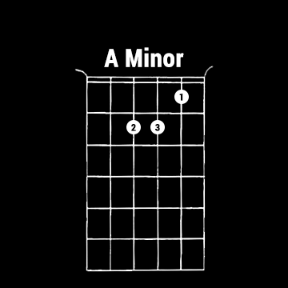
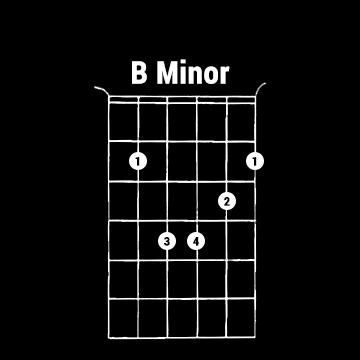
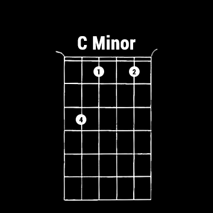
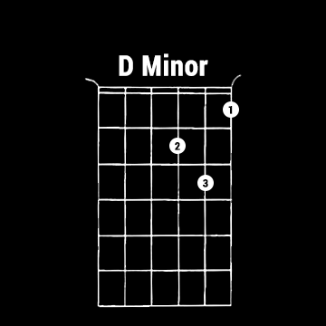
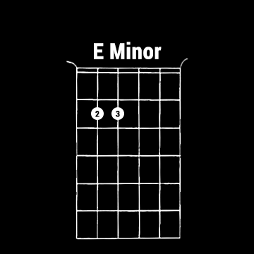
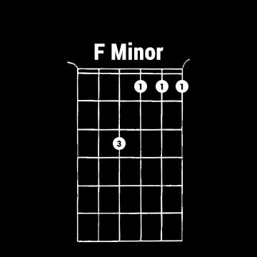
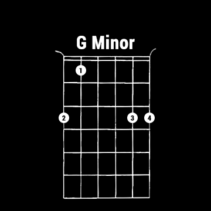

<!--
  Generated template for the MinorPage page.

  See http://ionicframework.com/docs/components/#navigation for more info on
  Ionic pages and navigation.
-->
<ion-header>

  <ion-navbar color="black-navbar">
  </ion-navbar>

</ion-header>


<ion-content padding>
  <div class="chords">
    
    
    
    
    
    
    
  </div>
</ion-content>
